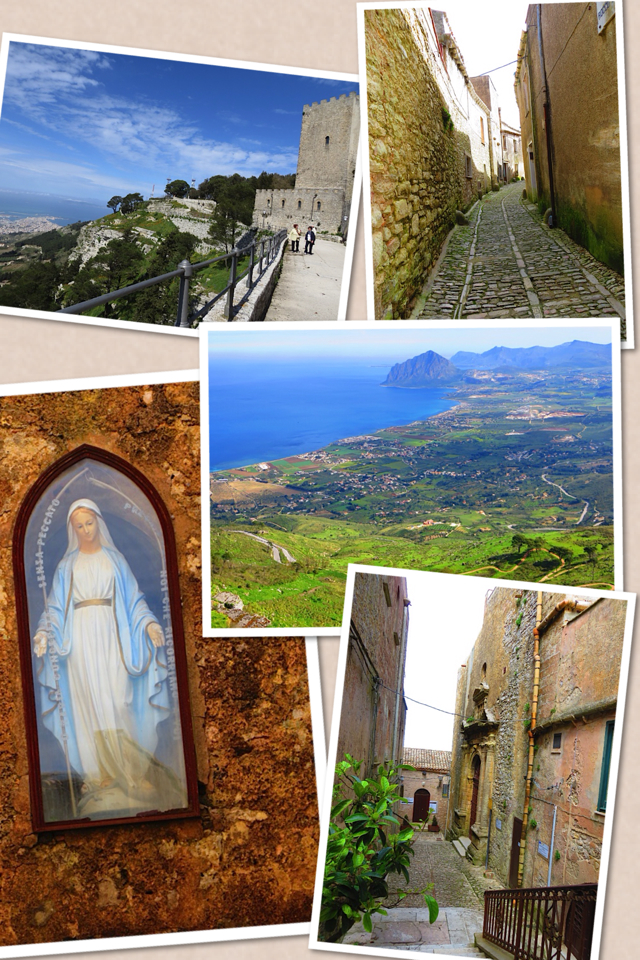
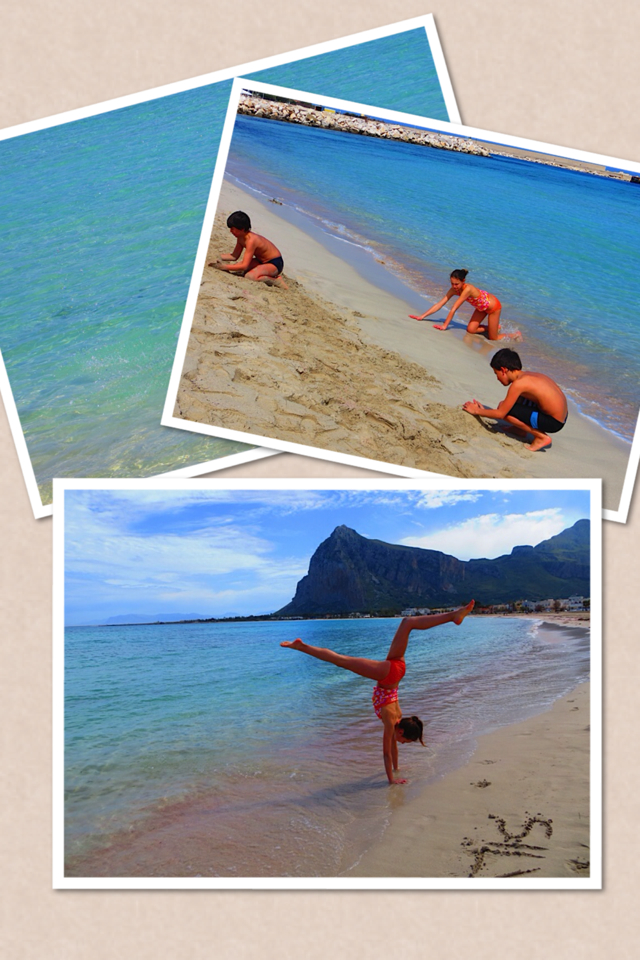
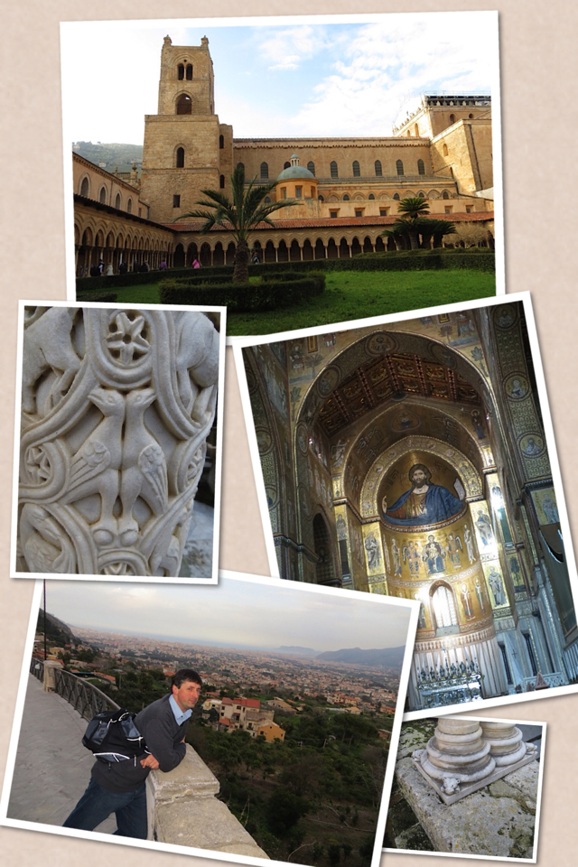

Erice We arrived in Trapani very late the night before. At the airport, we rented a minivan for 9 people and went straight to our hotel, Hotel Erice Valle in Valderice. Therefore when the first day of our tour began, we were already on Sicilian land. We had breakfast at 8am and left at 9am (this became our - strict- daily routine). The first stop was Erice. Erice is a medieval town on the top of a mountain from where you can enjoy a spectacular view over Trapani. The town is very small, we visited it in less that two hours, however it is definitely worth a visit.
San Vito lo Capo Our next stop was San Vito lo Capo, known for its beautiful beach. After the kids played with the sand and bathed in the sea (which is something only they can do when the water is still freaking cold), we ate a pizza by the beach and headed to the airport of Palermo to pick up Paolo, who was coming from the States.
Monreale Then we headed for Monreale where we arrived around 4.30pm, still in time to visit the Cathedral with its stunning mosaics and the Abbey with its magnificent cloister. From Monreale you can also enjoy a nice view of Palermo. Our last goal for the day was to go back to Erice, mainly for two reasons: first, I wanted Paolo to see it; second, we wanted to experience the cable car. And so we did: 6 of us went back to Erice by cable car, while the rest of the group drove up the hill. We visited Erice by night, had a delicious (but creeping expensive) dinner and then returned to the hotel. PS Want to see more photos? Visit our Facebook page!